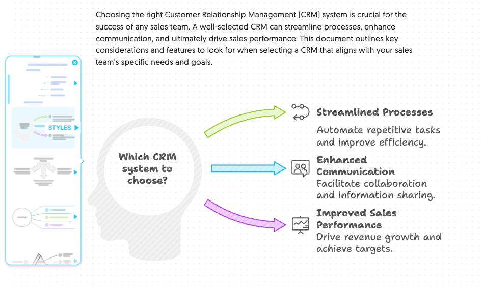

NapkinAI 五个藏得很深的冷门玩法，用过三个算高手
NapkinAI 大家都知道是文字转视觉的神器，但几个官方没明说的隐藏功能，能让你的生成效率翻一倍——重跑不丢编辑、免费版无限制导出、风格随时切换，一起来挖。
你以为 NapkinAI 就是个「把文字粘进去 → 一键出流程图」的工具？其实在NapkinAI官网上，它还藏着一堆官方没怎么宣传的小彩蛋。作为一个把它翻了快一个月的折腾党，今天把我挖到的五个冷门玩法一次性交出来，能用上三个就算高手了。
重跑某一页，其他页的编辑不会丢
这是我觉得最被低估的一个特性，几乎没在任何入门教程里见过。
用 Napkin Slides 生成整套 PPT 之后，你肯定遇到过这种情况：第 3 页和第 5 页调了半小时配色、改了一堆图标，结果翻到第 7 页发现 AI 生成的结构图实在太丑，想让它重新跑一遍——但又怕重跑之后前面两页的手动编辑全白做。
NapkinAI 早把这个顾虑解决了。它的 Slides 重跑是精准的：你只让 AI 重新生成第 7 页，第 3 页和第 5 页那些手动改过的元素、配色、图标，一个字都不会动。
这个逻辑背后其实是 Napkin 的编辑引擎设计——每一页的编辑状态是独立保存的，重跑只影响你指定的那一页，其他页的手动修改原样保留。我实测过：改了 6 页的字体和配色，重跑最后一页，前 6 页零变动。再也不用纠结「改了这么多，要不要冒险重跑」了。
免费版不是只能预览，编辑和导出全开放
很多人以为免费版就是个 Demo，只能生成看看，真要导出就得买 Pro。我当初也是这么想的，直到某天随手点了一下下载按钮——居然直接导出了 PNG？
后来去NapkinAI文档翻了一下才搞清楚：免费版的限制只在生成这一步。每周 500 个 AI credits，选词生成视觉消耗 credits，但一旦生成出来，后面的编辑、导出、导入这些环节完全不扣、不限、不加水印外没有其他限制。
具体来说：
- 无限制编辑已有视觉，想改多少改多少
- 可导入任意格式的文件进来做二次加工
- 无限制导出 PNG 和 PDF，想导多少导多少
这个设计挺鸡贼的——把最核心的「生成」环节掐住让你付费尝鲜，但一旦你有了产物，后续所有加工全放开。对于偶尔用用的人来说，500 credits 每周其实够了；但如果你要批量生成几十张，那免费版确实顶不住，安装包从官方下载拿就行。

结果列表的排序不是最优的，别只看第一张
AI 生成完视觉之后会横向滚出一排候选，从流程图到信息图到条形图各种类型都有。官方的说法是「排序按匹配度」，但我用了一段时间发现这个排序更像是 AI 自认为的匹配度，而不是实际使用场景的匹配度。
举个例子：你输入了一段步骤说明，AI 排在最前面的通常是标准流程图——但如果你实际要的是一张适合发社交媒体的扁平信息图，它可能排在第 5 或第 6 张。
我的习惯是至少滚完前 8 张再做决定。很多时候第 3、4 张的某个布局或图标选择反而最贴合我的用途。如果实在没一张满意的，可以点 AutoSpark 再生成一轮，每次会换一批候选出来。
风格不是锁死的，随时能换甚至自己做
选中一张候选之后 Napkin 会让你挑风格——简约、商务、手绘、扁平、教育……横向滚动一排点选就行。但很多人选完风格就不管了，以为这一步只是「一次性定调」。
其实风格是完全可替换的。选中某个风格插入文档之后，你随时可以在 Style 菜单里切到其他内置风格，整个视觉瞬间换一套配色和字体，结构布局一点不动。而且风格和元素编辑是独立的：先套一个风格定基调，再双击个别元素单独改颜色或字体，两层可以叠加用。
风格挑选器实时预览，选完插入后也能随时切换或自定义。
付费版（Plus 和 Pro）还能创建自定义品牌风格：上传自己的品牌色和字体，Napkin 自动给你生成匹配品牌的视觉。这个对做公司内部文档的人挺实用的，免费版用内置风格也完全够用。
桌面才能注册，移动设备直接用已登录账号
这个算是一个门槛提醒——注册账号只能在桌面浏览器上完成，移动端和平板暂不支持注册。但注册完之后，你在手机上是可以直接打开用已登录账号的。
Google 账号一键登录是最快的方式，点一下授权就进；不想绑 Google 的用邮箱加密码也可以，收个验证邮件点确认链接就行。新号注册完自动带首次引导教程，五分钟走完，中途想跳过也有关闭入口。
一个别踩的坑：移动设备不能注册但能使用
把这五个技巧用起来之后，你会发现 NapkinAI 的效率比当初瞎用的时候至少翻倍。它的隐藏功能其实都挺实在的，没花里胡哨的东西——重跑保留编辑解决了最大的焦虑，免费版全开放降低了试用门槛，风格随时切换让试错成本变零。
最后提一句，注册环节只能在桌面完成是目前的限制，但移动端登录已有账号不受影响。如果哪天 Napkin 开放了移动端注册，那整个使用体验会更闭环。现在的状态是，先在桌面搞定注册，后面在哪用都行。